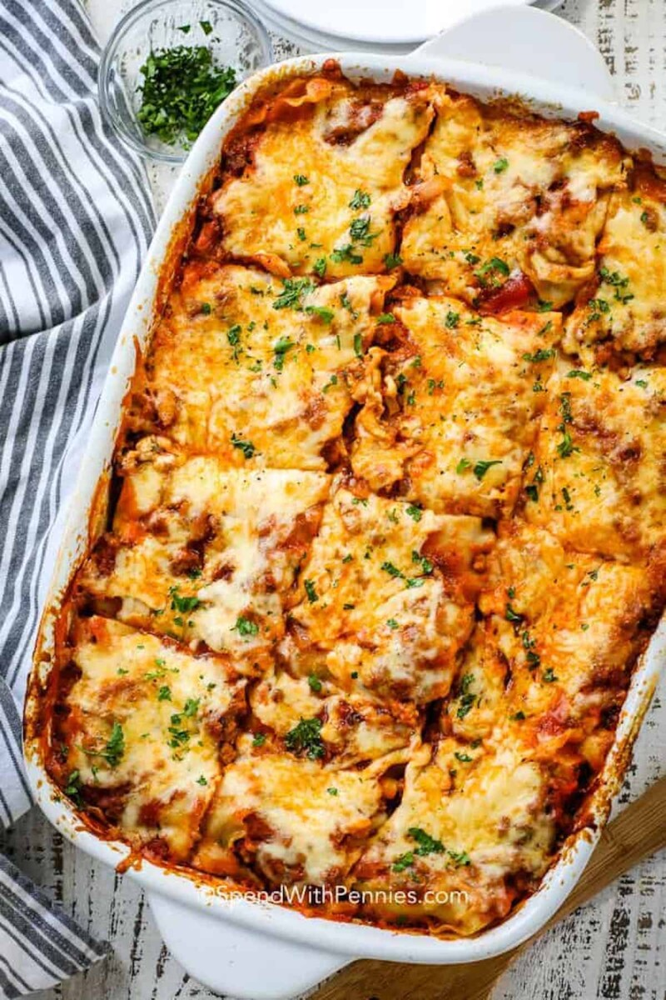

Lasagna

Description
Ingredients
-
- Lasagna noodles
- Ground beef or Italian sausage
- Onion, chopped
- Garlic, minced
- Canned tomatoes
- Tomato sauce
- Tomato paste
- Red wine
- Dried basil
- Dried oregano
- Salt and pepper
- Egg
- Ricotta cheese
- Shredded mozzarella cheese
- Grated Parmesan cheese
Steps
- Preheat the oven to 375°F (190°C).
- Cook the lasagna noodles according to package instructions and set aside.
- In a large skillet over medium-high heat, cook the ground beef or Italian sausage, onion, and garlic until the meat is browned and the onion is translucent.
- Add the canned tomatoes, tomato sauce, tomato paste, red wine, basil, oregano, salt, and pepper to the skillet. Stir to combine and bring to a simmer. Reduce heat to low and let the sauce simmer for 15-20 minutes.
- In a separate bowl, whisk the egg and combine with the ricotta cheese, salt, and pepper.
- To assemble the lasagna, spread a layer of the meat sauce on the bottom of a 9x13 inch baking dish. Add a layer of cooked lasagna noodles, followed by a layer of the ricotta mixture, shredded mozzarella cheese, and grated Parmesan cheese. Repeat layers until all ingredients are used up.
- Cover the baking dish with foil and bake for 25 minutes. Remove the foil and bake for an additional 25 minutes or until the cheese is melted and bubbly.
- Let the lasagna cool for a few minutes before slicing and serving.